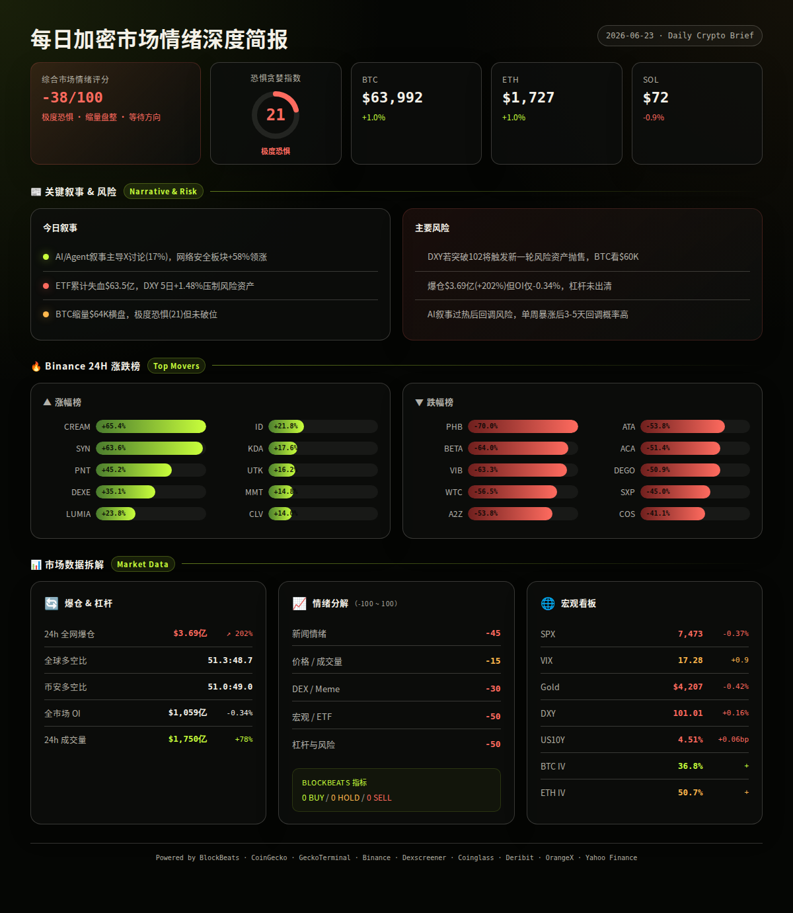
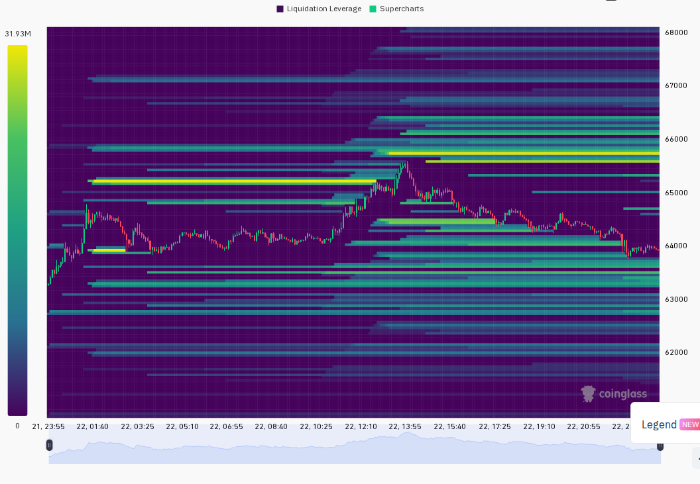
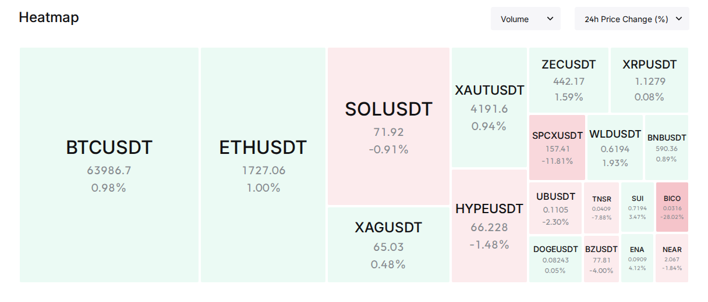

━━━━━━━━━━━━━━━━━━━━━━
⏰ 1. 24小时变化:
恐惧与贪婪指数 21 · 极度恐惧
BTC $63,992 · +1.0%
ETH $1,727 · +1.0%
SOL $71.94 · -0.9%
VIX 17.28 · +0.9 · 正常区间
成交量 $1,640亿 · +78%
DXY 101.01 · +0.16%
爆仓 $3.69亿 · +202%
━━━━━━━━━━━━━━━━━━━━━━
—— BTC / ETH / SOL ——
大盘在极度恐惧情绪中缩量盘整，BTC多次测试$64K未有效站稳，ETH/SOL同步承压。链上出现MEV攻击者通过Tornado Cash洗钱2000 ETH事件，短期对ETH情绪有负面扰动。
信息 1: 恐惧与贪婪指数跌至21，位于极度恐惧区间，为近三个月最低水平之一。（OrangeX F&G）
信息 2: BTC 24h成交量$9.93亿（Binance现货），属于偏低水平，结合波动区间$63,373-$65,623，市场处于等待方向选择的缩量状态。（Binance）
信息 3: 知名MEV机器人Jaredfromsubway攻击者通过Tornado Cash转移2,000 ETH（约$344万），并卖出1,422 ETH兑换DAI，目前仍持有部分ETH。（BlockBeats）
信息 4: Strategy（原MicroStrategy）将美元储备提升至$14亿，同时将比特币持仓扩大至847,363 BTC。（LSEG/Reuters headlines, analysis）
信息 5: BTC/ETH/SOL期货均出现轻微负溢价（BTC -0.047%, ETH -0.063%, SOL -0.055%），期货市场情绪偏空，但幅度极小未形成明显看空信号。（Binance premiumIndex）
—— 宏观 / 地缘政治 ——
格林斯潘百岁去世标志着一个时代的终结，同日美国货币市场利率跳升、加息担忧升温。美元指数5日累计走强1.48%，对风险资产形成系统性压力。伊朗海峡言论扰动但实际通航未中断。
信息 6: 美联储前主席艾伦·格林斯潘去世，享年100岁。其任期跨越1987-2006年，定义了现代美联储的危机管理风格。多家机构以"旧金融时代的终结"为主题发表评论。（LSEG/Reuters headlines, BlockBeats文章）
信息 7: 美国货币市场利率跳升，加息担忧升温。前美联储理事Warsh警告"更安静的美联储可能意味着更波动的市场和更高利率"。（LSEG/Reuters headlines）
信息 8: 美元指数DXY报101.01，24h升0.16%，5日累计升1.48%。美元走强背景下黄金小幅下跌0.42%，表明传统避险资产也在承压。（Yahoo Finance, analysis）
信息 9: 伊朗声称封锁海峡，但55艘船只仍在通行，地缘政治扰动尚未升级为实质供应中断。（BlockBeats文章）
—— AI / 半导体叙事 ——
AI叙事持续占据市场主导地位，在X信号中排名第二（17%占比）。CoinGecko网络安全板块涨幅第一（+57.6%），与AI安全需求逻辑一致。谷歌和亚马逊联合正面对抗Nvidia的新闻进一步催化了AI算力竞争的叙事。
信息 10: 谷歌与亚马逊联合发起对Nvidia的"全面正面攻击"，在AI算力领域形成新的竞争格局，Nvidia股价承压下跌。（LSEG/Reuters headlines）
信息 11: Groq成功融资$6.5亿，放弃芯片制造转向AI数据中心竞争。这一转型标志着AI算力赛道从硬件向服务的战略转移。（LSEG/Reuters headlines）
信息 12: ON Semiconductor（NASDAQ:ON）单日涨7.6%，成交量放大。Applied Materials与美国贸易代表讨论半导体创新与下一代AI计算的关联。（LSEG/Reuters headlines）
信息 13: CoinGecko板块分类中网络安全板块24h涨幅+57.6%领跑全场，Olympus Pro生态+32.2%紧随其后，与AI安全、DeFi基础设施需求上升的趋势一致。（CoinGecko）
—— 值得关注的标的 ——
Binance 涨幅榜 (USDT):
· CREAM +65.4%
· SYN +63.6%
· PNT +45.2%
· DEXE +35.1%
· LUMIA +23.8%
· ID +21.8%
· KDA +17.6%
· UTK +16.2%
· MMT +14.8%
· CLV +14.0%
跌幅榜:
· PHB -70.0%
· BETA -64.0%
· VIB -63.3%
· WTC -56.5%
· A2Z -53.8%
· ATA -53.8%
· ACA -51.4%
· DEGO -50.9%
· SXP -45.0%
· COS -41.1%
—— 融资 / VC ——
信息 14: 链上交易平台TurboFlow完成$600万种子轮融资，由Pantera Capital领投，Susquehanna Crypto和Digital Currency Group参投。TurboFlow定位为"亚太区Kalshi"，提供预测市场和永续期货，beta版已运行6个月，注册用户超1.5万，累计交易量超$190亿。（BlockBeats）
—— X/Twitter KOL 信号 ——
信息 15: 过去24h Tin的三个X List共抓取581条推文，AI/Agent叙事以101条（17%）居首，CRYPTO市场83条（14%），地缘政治67条（12%）。未分类和噪声内容占比约48%，信号噪声比偏低但主要叙事方向清晰。（X Lists, analysis）
信息 16: 代币层面，$SPCX被4人提及4次且偏多，$FLKR被2人提及2次偏多，$ARX被2人提及2次分歧。$SPCX和$FLKR出现多人偏多讨论，适合作为交叉验证对象——检查价格是否尚未启动、成交量是否刚放大、funding/OI是否未过热。当前$ARX也在CoinGecko trending第1位，X与CG数据共振，值得跟踪。（X Lists, CoinGecko, analysis）
━━━━━━━━━━━━━━━━━━━━━━
风险 1: 美元持续走强压制风险资产
DXY 5日累计上涨1.48%，若突破102可能触发新一轮风险资产抛售。美国货币市场利率跳升和加息担忧正在增强美元吸引力。
观察: DXY能否守住102关口；US10Y是否突破4.6%
失效条件: 美联储官员释放鸽派信号或经济数据显著弱于预期（LSEG/Reuters headlines, Yahoo Finance, analysis）
──────────────────────
风险 2: 爆仓量激增+202%后的市场脆弱性
24h爆仓$3.69亿（+202%），但OI仅小幅下降0.34%，说明多头尚未大规模止损离场。若BTC跌破$63,000支撑位，可能触发连锁清算。
观察: BTC是否守住$63,000-$63,300区间；OI是否开始显著下降
失效条件: BTC放量突破$66,000（确认支撑有效）或OI大幅下降（杠杆已出清）（Coinglass, Binance, analysis）
──────────────────────
风险 3: BTC ETF持续失血对市场信心的侵蚀
比特币ETF累计损失$63.5亿，加密相关股票（Block -2.5%, Cipher Mining -3.6%, Circle -0.7%）集体走弱。机构资金流向仍是市场方向的关键变量。
观察: 下一交易日ETF净流入/流出数据
失效条件: ETF出现连续净流入日，或Strategy等持币大户的大额增持转化为市场信心（LSEG/Reuters headlines, analysis）
──────────────────────
风险 4: AI叙事过热后的回调风险
AI/Agent叙事在X上占比17%，网络安全板块+57.6%，已连续多日占据主导。Google/Amazon联合对抗Nvidia的消息可能在短期催化见顶后引发获利了结。历史上强叙事板块单日暴涨后的3-5天回调概率较高。
观察: AI相关代币和板块是否出现放量滞涨；CoinGecko trending中AI相关币的持续性
失效条件: 新的AI催化剂（重大合作、产品发布、融资）接力维持热度（CoinGecko, X Lists, analysis）
──────────────────────
风险 5: 以太坊链上安全事件余波
MEV攻击者通过Tornado Cash洗钱2000 ETH，虽然金额不大（~$344万），但Tornado Cash再度被用于洗钱可能引发监管关注。若OFAC或相关监管机构在近期发布新的制裁或执法行动，可能短期打击DeFi情绪。
观察: 是否有监管机构对此事件发表声明；Tornado Cash相关地址是否被新增至制裁名单
失效条件: 事件在一周内无监管响应，市场将其视为孤立事件（BlockBeats, analysis）
非财务建议声明: 本报告仅提供市场数据和情绪分析，不构成任何买卖建议。
━━━━━━━━━━━━━━━━━━━━━━
· 6/23（周一）— 美国6月PMI初值 — 若低于预期，衰退担忧升温利空风险资产；若超预期，美元可能进一步走强（analysis）
· 6/24（周二）— 美国CB消费者信心指数 — 消费信心是Fed关注的核心变量之一，影响加息预期路径（analysis）
· 6/25（周三）— 美国新屋销售数据 — 房地产数据影响美债收益率预期，间接传导至风险资产（analysis）
· 6/26（周四）— 美国GDP终值（Q1第三次估算） — 若大幅上修或下修将直接影响Fed政策预期（analysis）
· 整周 — 伊朗海峡局势演变 — 若冲突升级将触发避险情绪，黄金和BTC可能受益于避险资金流入（analysis）
━━━━━━━━━━━━━━━━━━━━━━
综合评分: -38/100 (偏空，极度恐惧但缩量企稳)
5 个维度:
新闻情绪: -45/100 — ETF失血$63.5亿、加息担忧升温、加密股票集体走弱、格林斯潘去世引发"旧秩序终结"叙事。唯融资面和AI叙事偏正面。（BlockBeats, LSEG/Reuters headlines, analysis）
价格/成交量: -15/100 — BTC/ETH微涨1%但成交量偏低，SOL小幅下跌。缩量反弹通常是中性偏弱信号，不构成趋势反转确认。（Binance, CoinGecko, analysis）
DEX/meme 活跃度: -30/100 — Solana trending pools中仅Jetchua/SOL有$4.6M成交量但跌幅达-97.7%，流动性极低（$6K）；CONDOR涨1362%但流动性仅$53K属高风险标的。无满足条件的新池。（GeckoTerminal, analysis）
宏观/ETF/流动性: -50/100 — VIX正常（17.28）但DXY 5日上涨1.48%、US10Y维持4.51%高位、SPX 5日跌1.08%。黄金跌0.42%，传统避险资产同样承压。ETF持续失血是最直接的看空信号。（Yahoo Finance, LSEG/Reuters headlines, analysis）
杠杆与风险: -50/100 — 爆仓$3.69亿（+202%）是警讯，但OI仅降0.34%说明杠杆尚未充分出清。BTC期货负溢价-0.047%，多空比51:49接近平衡。极端恐惧下的高爆仓量通常是底部信号，但需要OI下降来确认。（Coinglass, Binance, Deribit, analysis）


以下为基于多源数据交叉验证的概率情景分析：
情景 1 (概率: 40%, 置信度: 中):
极度恐惧中的区间震荡延续 — BTC在$63,000-$66,000区间内继续缩量盘整，市场等待周二PMI或周四GDP数据给出方向。ETH跟随BTC波动，SOL表现相对较弱。AI叙事支撑部分山寨币独立行情。
关键条件: DXY不突破102，BTC不跌破$63,000，VIX维持在15-20区间
若发生则BTC目标$63,000-$66,000, ETH $1,680-$1,800, SOL $70-$78 (multi-source, analysis)
情景 2 (概率: 35%, 置信度: 中):
美元走强引发风险资产新一轮抛售 — DXY突破102叠加加息担忧，SPX扩大跌幅至-2%以上，BTC跌破$63,000并测试$60,000心理关口。极端恐惧下的连锁爆仓进一步放大跌幅。
关键条件: DXY突破102，US10Y突破4.6%，SPX单日跌幅>1.5%
若发生则BTC目标$58,000-$62,000, ETH $1,550-$1,650, SOL $62-$68 (multi-source, analysis)
情景 3 (概率: 25%, 置信度: 低):
利空出尽反弹 — ETF资金面出现拐点，或AI叙事叠加宏观转鸽形成共振反弹。BTC在极度恐惧区间形成短期底部后快速反弹至$67,000以上。Strategy等大户增持和AI融资活跃度提供基本面支撑。
关键条件: ETF转为净流入，联储官员释放鸽派信号，BTC放量突破$66,000
若发生则BTC目标$66,000-$70,000, ETH $1,800-$1,950, SOL $78-$85 (multi-source, analysis)
━━━━━━━━━━━━━━━━━━━━━━
· BTC: $63,992, 24h +1.0%, 成交量 $9.93亿（Binance现货）, 高低区间 $63,373-$65,623。缩量小阳线，$64,000关口反复争夺，上方$65,600为短期阻力。（Binance）
· ETH: $1,727, 24h +1.0%, 成交量 $4.58亿（Binance现货）, 高低区间 $1,710-$1,780。跟随BTC走势，$1,700支撑仍有效，但反弹力度弱。（Binance）
· SOL: $71.94, 24h -0.9%, 成交量 $1.89亿（Binance现货）, 高低区间 $71-$75。表现弱于BTC/ETH，$70为关键支撑位。（Binance）
· 全球总市值: $2.28万亿, 24h +0.90%, 24h成交量 $740亿。BTC市占率56.3%，ETH市占率9.1%。（CoinGecko）
· 爆仓数据: 24h全市场爆仓$3.69亿，较前日+202%。其中多头占比约51.3%，空头48.7%，多空双方均遭重创，表明市场剧烈双向波动。（Coinglass）
· OI 与成交量: 全市场OI $1,059亿（-0.34%），24h成交量 $1,750亿（+78%）。成交量大增但OI持平，说明短线资金活跃但仓位未累积——典型的震荡市特征。（Coinglass）
· 宏观看板: SPX 7,472.79（-0.37% 24h, -1.08% 5d），VIX 17.28（正常区间），DXY 101.01（+0.16% 24h, +1.48% 5d），US10Y 4.51%（+0.06bp 24h），Gold $4,206.50（-0.42% 24h）。（Yahoo Finance）
· 期权波动率: BTC ATM IV 36.8%（低波动），ETH ATM IV 50.72%（正常区间），ETH-BTC IV价差13.9pp（中等山寨币溢价，未达15pp阈值）。期权市场对BTC相对平静，ETH有一定投机溢价。（Deribit）
以下基于 CoinGecko trending + DEX 数据交叉验证：
SYN (Synapse):
价格 $0.27, 24h +63.6%（Binance）, 市值排名 #379。
DEX: 流动性 $66.69M（Solana）, 24h成交量 极低（CEX主导交易）。
催化剂: Binance涨幅榜第2名，CoinGecko trending #2，跨链桥叙事在L2竞争加剧背景下重新受到关注。
风险: 24h暴涨63%后获利盘压力大，需观察是否放量滞涨。（CoinGecko, Binance, Dexscreener, analysis）
CREAM (Cream Finance):
价格 $0.21, 24h +65.4%（Binance）, 市值排名未进前200。
DEX: 流动性 $39.5K（BSC）, 24h成交量 $685, 买卖比 19:60（卖盘占优）。
催化剂: Binance涨幅榜第1名，DeFi借贷协议代币，可能受到AI+DeFi叙事溢出影响。
风险: DEX上卖盘明显占优（B/S 19:60），流动性极低，暴涨后回调风险高。（CoinGecko, Binance, Dexscreener, analysis）
ARX (Arcium):
价格 $0.11, 24h -0.2%（DEX）, 市值排名 #381。
DEX: 流动性 $61.3M（Solana）, 24h成交量 $125。
催化剂: CoinGecko trending #1，X信号3人提及，隐私计算赛道。但链上成交量极低，热度主要由CEX和社交情绪驱动。
风险: X多空分歧，DEX成交量低迷，CEX数据未验证。（CoinGecko, X Lists, Dexscreener, analysis）
━━━━━━━━━━━━━━━━━━━━━━
· GeckoTerminal Solana trending pools (24h 成交量 > $1M):
1. Jetchua/SOL: 成交量 $4.6M, -97.7%, 流动性 $6K — 极高风险，流动性已蒸发（GeckoTerminal）
2. CONDOR/SOL: 成交量 $1.8M, +1362.6%, 流动性 $53K — 巨幅波动，高风险（GeckoTerminal）
3. SOLANGELES/USDC: 成交量 $1.2M, -3.0%, 流动性 $236K — 相对稳健（GeckoTerminal）
4. ZERO/USDC: 成交量 $1.2M, -9.3%, 流动性 $305K — 小跌放量（GeckoTerminal）
5. Moonlake/SOL: 成交量 $1.2M, +55.2%, 流动性 $48K — 上涨但流动性薄（GeckoTerminal）
· 备注:
今日市场以极度恐惧为主基调，但缩量横盘表明卖方力量正在衰竭。Solana DEX trending pools整体流动性偏薄（前5中仅2个流动性>$100K），说明链上活跃度较低。AI/Agent叙事持续主导X讨论但尚未显著转化为DEX交易量。CoinGecko网络安全板块+57.6%值得关注，可能与AI安全需求上升有关。爆仓激增+202%是多空双方同时被清洗的结果，OI仅微降意味着杠杆尚未充分出清，短期仍需防范二次清算。建议重点关注周二PMI数据和周四GDP终值，这两个数据将决定本周后半段的方向选择。